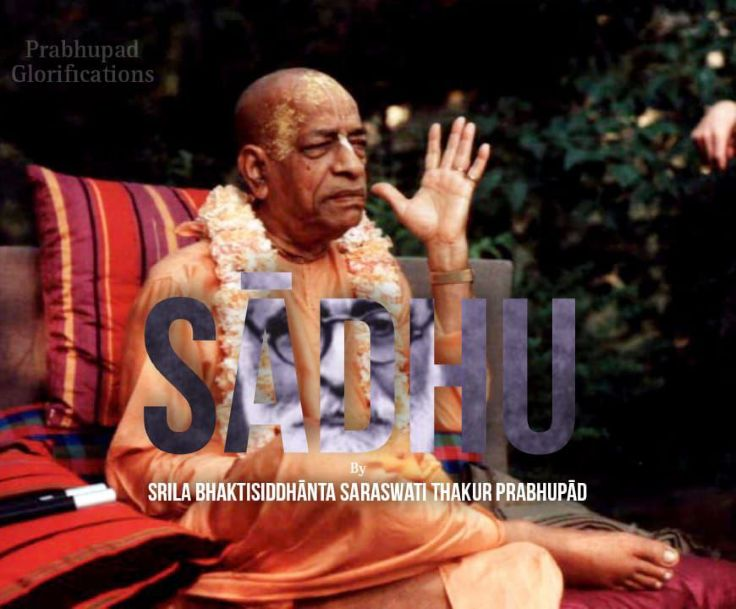

Meaning of Sādhu
Posted on : 30th September, 2025

Without doubt, a sadhu's words possess power to destroy the evil propensities of one's mind. In this way, sadhus benefit everyone who associates with them. There are many things which we do not disclose to the sadhu. The real sadhu makes us speak out what we keep concealed in our hearts. He then applies the knife. The very word sadhu has no other meaning than this. He stands in front of the block with the uplifted sacrificial knife in his hand. The sensuous desires of men are like goats. The sadhu stands there to kill those desires by the merciful stroke of the keen edge of the sacrificial knife in the form of unpleasant language.If the sadhu turns into my flatterer, then he does me harm; he becomes my enemy. If he flatters us, we will be led to the road which brings worldly enjoyment but no factual well-being.
~ Om visnupād Paramhamsa 108 Sri Srimad Bhaktisiddhānta Saraswati thākur srila Prabhupād in Harmonist 28.264,Feb 1931;SBV vol. 1,p.143.
Send this to those who cry "Oh why he said that to me... He is saint he cannot speak to me like this... I am hurt" Too much sugar will cause you diabeties, have some nice chilly, Be strong obedient and healthy. Accept the sādhu who gives you not genral but your reality check, jolts you with truth, just by saying "Radhe radhe" One does not becomes sādhu.
~Admin